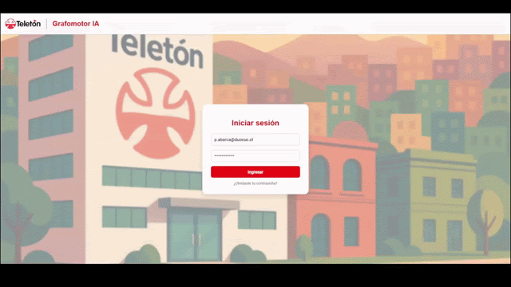
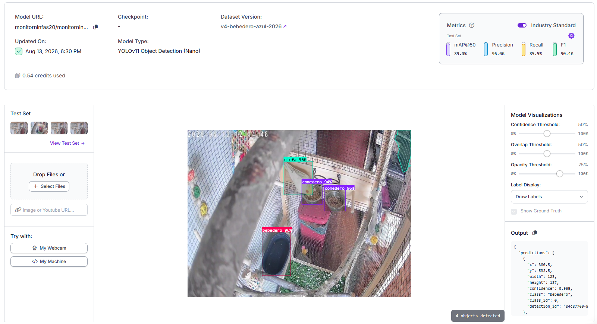
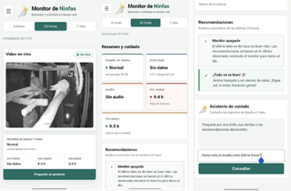
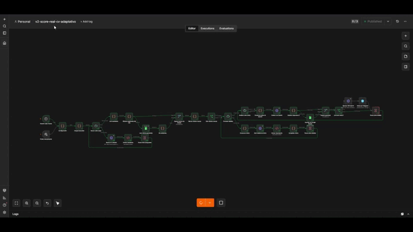
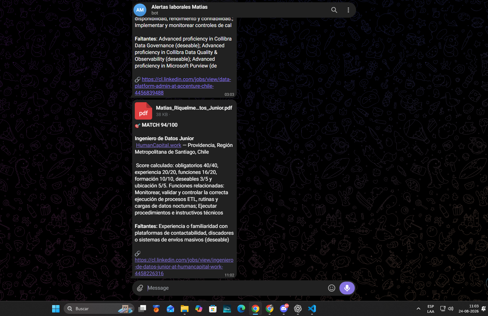

Construyo soluciones web escalables con Angular, React, TypeScript, C# / .NET 8 y Microsoft Azure. Automatizo procesos, integro sistemas y me obsesiona que el software resuelva problemas reales.
Empecé a desarrollar cuando aún era estudiante, primero en el front-end y sumándome progresivamente al back-end. Mi primer gran desafío fue GrafomotorIA, junto a Fundación Teletón: lideré el front-end con React y TypeScript —la captura de trazos, la trayectoria, la velocidad y todas las métricas clínicas del proyecto— y, al trabajar directamente con el cliente, en la práctica me desenvolví como desarrollador full stack.
Luego, en Seguros SURA Chile, mi rol ya fue oficialmente full stack: front-end, back-end, temas de seguridad y apoyo en la arquitectura del software.
Hoy soy Ingeniero en Informática titulado. Mi mayor fortaleza está en el front-end, pero me muevo con soltura por todo el stack, y mi objetivo actual es profundizar en arquitectura de software para crecer hacia un rol de arquitecto. Fuera del trabajo sigo construyendo proyectos personales; ahora mismo, Cámara Ninfas, un sistema inteligente de monitoreo de mascotas.
02 — TrayectoriaExperiencia profesional
Ago 2025 — Feb 2026
Desarrollador Full Stack — Práctica profesional
Seguros SURA Chile
Desarrollo full stack del Sistema SEPT: 6 módulos y ~15 endpoints con Angular 20 (SSR), TypeScript, .NET 8, C# y SQL.
Diseño del modelo de datos y despliegue de 4 servicios en Azure: App Service, SQL Database, Active Directory y DevOps.
Automatización mensual de 2.500 facturas con Power Automate: el proceso pasó de varios días a 2–4 horas (−90%).
Levantamiento de requerimientos bajo Scrum y dashboards en Power BI con ~8 indicadores operacionales.
Angular 20.NET 8AzurePower AutomatePower BI
Nov 2024 — Dic 2025
Desarrollador Full Stack — Proyecto GrafomotorIA
Duoc UC & Fundación Teletón
PWA con 8 actividades interactivas en React y TypeScript para digitalizar y evaluar el test clínico VMI.
Implementación de 3 algoritmos de análisis geométrico: Procrustes, DTW y Distancia de Fréchet.
Extracción de 5 métricas de trazo: velocidad, aceleración, presión, precisión y trayectoria.
Arquitectura híbrida que integra reglas clínicas computables, procesamiento de datos y modelos de IA.
~20 componentes reutilizables para la mantenibilidad y la experiencia terapéutica del frontend.
ReactTypeScriptPWAIA
Mar 2024
Desarrollador de Software — Práctica laboral "Reading to Learn"
Duoc UC
Plataforma educativa con 3 módulos: escritura digital, evaluación y retroalimentación automática al estudiante.
~5 rúbricas y reglas de corrección para estandarizar y agilizar las evaluaciones académicas.
Integración bidireccional con Moodle: cursos, inscripciones, estudiantes y calificaciones.
El problema. El test VMI —la prueba clínica estándar para evaluar la coordinación visomotora— se aplica tradicionalmente en papel: depende del ojo del terapeuta, es difícil de cuantificar objetivamente y no permite el seguimiento a distancia de los pacientes.
La solución. GrafomotorIA lo digitaliza con una PWA de 8 actividades interactivas en React y TypeScript. El paciente dibuja sobre una pizarra digital y el sistema analiza presión, velocidad, aceleración, precisión y trayectoria del trazo, entregando al terapeuta una evaluación objetiva y habilitando la telerehabilitación. El proyecto obtuvo el Premio al Proyecto Más Innovador en el Demo Day 2025 de Duoc UC.

Demo — GrafomotorIA en acción video/grafomotoria-demo.gif
Cómo funciona por dentro
Todo parte en la pizarra digital: cada trazo del paciente se captura como una ráfaga de puntos con coordenadas (x, y), tiempo y presión. Sobre esos datos corre una pipeline de tres etapas, donde cada algoritmo prepara los datos para el siguiente.
1
Remuestreo — normalizar los datos
La pizarra captura puntos a la tasa que permite el hardware (~60 Hz): un trazo rápido genera pocos puntos y uno lento, miles. Antes de comparar, ambos trazos se remuestrean mediante interpolación lineal a lo largo de la trayectoria, para que el dibujo del paciente y la figura modelo tengan exactamente el mismo número de puntos.
2
Procrustes — alineación espacial
Elimina las variables que no importan clínicamente. Si el paciente dibujó más grande, más pequeño o desplazado en la pizarra, Procrustes escala ambos trazos a dimensiones uniformes, traslada el centroide del dibujo al mismo origen del modelo y lo rota hasta el ángulo donde la distancia cuadrática entre puntos correspondientes es mínima. El resultado es un trazo purificado: ya no importa dónde ni a qué tamaño se dibujó, sino la fidelidad de la forma.
3
DTW — alineación temporal
Con las formas ya superpuestas, Dynamic Time Warping compara las secuencias sin exigir una correspondencia rígida punto a punto: busca el camino de deformación óptimo (warping path), permitiendo que un solo punto del modelo se asocie a varios puntos del trazo del paciente —una pausa o una desaceleración al dibujar— y calcula una distancia acumulada inmune a las variaciones de velocidad.
Al final se combinan ambos resultados: Procrustes mide qué tan distorsionada está la geometría espacial del trazo y DTW, qué tan alterada está su fluidez temporal. Juntos entregan al terapeuta una medida objetiva y comparable entre sesiones.
Proyecto personal · Visión por computador e IA · 2026
Cámara Ninfas
El problema. Una cámara convencional permite mirar la jaula, pero no resume qué hizo cada ave durante el día, cuánto se movió ni cuándo se acercó a comer o beber. Esa información se pierde cuando no hay una persona observando.
La solución. Cámara Ninfas transforma una webcam o cámara Tapo en un monitor inteligente en tiempo real. Un modelo de detección entrenado para este entorno reconoce a las ninfas, el comedero y el bebedero; el tracker conserva la identidad de cada ave y el sistema interpreta estados como activa, inactiva, comiendo o bebiendo.
Además, analiza movimiento y audio, genera alertas cuando no se observa alimentación o hidratación durante un periodo prolongado y guarda el historial en Azure SQL. Una app web construida con FastAPI reúne la transmisión en vivo, estadísticas por ave, eventos, recomendaciones y un asistente opcional conectado a Microsoft Foundry.
Detección y tracking
Localiza aves, comedero y bebedero con visión por computador, mantiene IDs persistentes y distingue individuos por el color de su plumaje.
Comportamiento y salud
Registra actividad, inactividad, comida y bebida; combina movimiento y audio para generar estados y alertas de observación.
Panel e historial
Muestra video anotado en vivo, estadísticas y una bitácora de eventos almacenada de forma asíncrona en Azure SQL.
Asistente opcional
Permite consultar el estado reciente y las recomendaciones del monitor mediante herramientas de solo lectura en Microsoft Foundry.
Tracker y aplicación
Estos espacios quedan listos para mostrar capturas reales del sistema. Al agregar los archivos indicados dentro de la carpeta img, las fotos reemplazarán automáticamente los marcadores.

01Foto del tracker
img/camara-ninfas-tracker.jpg
Vista del modelo detectando cada ninfa y siguiendo su actividad dentro de la jaula.

02Foto de la app
img/camara-ninfas-app.jpg
Panel web con la transmisión en vivo, el estado general y el historial de cada ave.
Nota: los estados, alertas y recomendaciones son ayudas de observación basadas en reglas; no reemplazan una evaluación veterinaria.
El problema. Como ingeniero en Informática recién titulado, actualmente estoy buscando una oportunidad para comenzar mi carrera profesional. LinkedIn publica nuevas vacantes durante todo el día y no siempre puedo estar revisando la plataforma: una oferta que encaja con mi perfil puede aparecer cuando no estoy conectado y pasar horas o incluso días antes de que la descubra. Para entonces, ya puede tener muchas postulaciones o haber dejado de estar disponible.
La solución. Mientras pensaba cómo mantenerme atento sin pasar todo el día actualizando LinkedIn, se me ocurrió automatizar ese recorrido. Desarrollé en n8n un pipeline que cada dos horas busca nuevas ofertas alineadas con mi perfil y me avisa cuando detecta un buen nivel de compatibilidad. Así puedo reaccionar antes y concentrarme en revisar y postular, mientras el flujo se encarga de recopilar las vacantes, eliminar duplicados y prácticas, y utilizar Gemini para contrastar los requisitos con mi catálogo curricular verificado.
La IA interpreta la oferta, pero no decide el resultado: un motor JavaScript calcula un score reproducible de 0 a 100 con ponderaciones y reglas de descarte. Cuando una vacante supera el umbral, el flujo genera un CV adaptado en LaTeX, lo compila a PDF, registra la oportunidad en Google Sheets y envía por Telegram el análisis, los requisitos faltantes, el enlace y el documento listo para postular.
01 · DescubreOfertas recientes
Cada dos horas ejecuta 26 búsquedas orientadas al perfil y obtiene vacantes publicadas durante las últimas 24 horas.
02 · FiltraDatos limpios
Quita duplicados de la ejecución y del historial, descarta prácticas y limita cada ciclo a nuevas oportunidades.
03 · AnalizaGemini + catálogo
Extrae requisitos, seniority y funciones, contrastándolos solamente con experiencia curricular comprobada.
04 · EntregaScore, CV y alerta
Calcula compatibilidad, genera el PDF adaptado y centraliza el resultado en Sheets y Telegram.
Flujo en ejecución y resultado
El video mostrará el recorrido completo en n8n. A su lado, la captura de Telegram enseña cómo llega el porcentaje de compatibilidad, el desglose del score, los requisitos faltantes y el CV personalizado en PDF.

▶Demo — flujo n8n en ejecución video/automatizacion-laboral-demo.gif
Video del workflow: búsqueda, análisis, scoring, generación del CV y envío automático.

Resultado en Telegram para una oferta con match 94/100 y su CV adaptado.
Sistema interno de 6 módulos desarrollado de punta a punta: frontend en Angular 20 con SSR, backend en .NET 8 y despliegue completo en Azure. Incluye automatización de facturación que redujo el proceso mensual en un 90%.
Angular 20 SSR.NET 8Azure
2024
Reading to Learn
Duoc UC
Plataforma educativa de escritura digital con evaluación y retroalimentación automática, integrada bidireccionalmente con Moodle para sincronizar cursos, inscripciones, estudiantes y calificaciones.
Plataforma educativaMoodle
04 — ReconocimientoPremio
Demo Day 2025 · Duoc UC
Premio al Proyecto Más Innovador — GrafomotorIA
Reconocimiento obtenido por el desarrollo de GrafomotorIA, en colaboración con Fundación Teletón. La solución digitaliza pruebas visomotoras utilizando Inteligencia Artificial para analizar métricas de trazo —presión, velocidad y precisión— facilitando la evaluación clínica y habilitando la telerehabilitación.
05 — StackHabilidades
Lenguajes
Python, JavaScript, TypeScript, C#, Java, HTML y CSS
Frameworks
React, Angular, .NET 8, Node.js, Django y Bootstrap
Cloud & datos
Azure App Service, Azure SQL Database, SQL, AWS y Google Cloud
Metodologías
Scrum, metodologías ágiles, levantamiento de requerimientos y documentación
Herramientas
APIs REST, Git, GitHub, Azure DevOps, Power Automate y Power BI
06 — Formación continuaCertificaciones
Arquitectura Cloud — EspecialidadTalento Digital para Chile · 2026
DevOps Essentials Professional Certificate (DEPC)CertiProf · Enero 2026
Blue Prism Foundation Training (RPA)Coursera · Noviembre 2025
Inteligencia Artificial y ProductividadGoogle · Octubre 2025
Cursor con PythonSantander Open Academy · Octubre 2025
Certified Data AnalyticsUBITS · Agosto 2025
Consultas a bases de datos con SQLUBITS · Septiembre 2025
Contenedores: beneficios para DevOpsUBITS · Agosto 2025
Google Cloud Skills Boost — 7 cursos de ML, Vertex AI, BigQuery ML y MLOpsGoogle Cloud · Junio 2025
Cybersecurity Awareness LearnerCertiProf · Enero 2025
Carrera de Desarrollo Frontend ReactCoderHouse · Enero 2024
Python Essentials 1Cisco Networking Academy · Enero 2024
Curso de JavaScript · Curso de Desarrollo WebCoderHouse · 2023